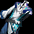
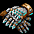
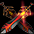
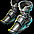
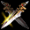

{kind=link}
（50分）
| ＜獣人＞ | |
|---|---|
| ガールズスタイル（Lv75） | |
| 超神速の境地（Lv125） | |
| 闇よりの使徒（Lv220） | |
| 天使のプレゼント（Lv330） | |
| 剣舞一式（Lv415） | |
| 超絶技巧アルテイラの遺物（Lv535） | |
| 天上戦隊ゴービースト（Lv580） | |
| 失望と裏切り（Lv650） |
| セット名 | 部位 | 沸き場所/ボス名・沸き時間 | |||||
| ガールズスタイル（Lv75） | スバイン要塞 | ||||||
| 食人鬼 （50分） |
|||||||
| アイテム詳細 | セット効果 | |||||||||
| 部位 | 名前 | ステ要求 | OP1 | OP2 | OP3 | ベース | 2個 | 3個 | 4個 | 5個 |
| ツインシャープサーベル | 力 17 知識 17 |
攻撃Lv6 ダメ＋60％ |
ショートツインサーベル | 魔法抵抗 +10％ |
魔法抵抗 +15％ |
魔法抵抗 +20％ |
魔法抵抗 +25％ |
|||
| フラワーヘッドバンド | 力 20 | HP効率Lv3 HP＋25％ |
強化ヘッドギア | ダメージ +10％ |
ダメージ +15％ |
ダメージ +20％ |
||||
| プリティレースブラウス | − | 防効Lv6 防御＋60％ |
力Lv3 力＋5 |
知識Lv2 知識＋3 |
布の服 | 体力吸収 7％ |
||||
| プラットフォームシューズ | 力 35 | 知恵Lv5 知恵＋10 |
強化シューズ | |||||||
| プラネットヘアバンド | 知識 4 | 最大CPLv4 最大CP＋15 |
偉い兜 | |||||||
| セット名 | 部位 | 沸き場所/ボス名・沸き時間 | |||||
| 超神速の境地（Lv125） | ソルティケーブB4 | ||||||
|  | 洞窟の猛獣 （60分） |
||||||
| アイテム詳細 | セット効果 | |||||||||
| 部位 | 名前 | ステ要求 | OP1 | OP2 | OP3 | ベース | 2個 | 3個 | 4個 | 5個 |
| 攻速突破ライトブリンガー | 力 24 知識 11 |
攻撃速度Lv1 攻撃速度＋15％ |
ライトツインサーベル | 魔法抵抗 +10％ |
魔法抵抗 +15％ |
魔法抵抗 +20％ |
魔法抵抗 +25％ |
|||
| 光粒子遮断スーツ | − | 防効Lv7 防御＋70％ |
攻撃回避Lv3 回避率＋5％ |
双剣士の戦闘服 | 回避率 13％ |
回避率 14％ |
回避率 15％ |
|||
| フォトンテイカー | 力 45 | 攻撃速度Lv1 攻撃速度＋10％ |
チェーングローブ | 攻撃速度 +5％ |
攻撃速度 +8％ |
|||||
| ワープゲートブーツ | 力 20 | 移動速度Lv3 移動速度＋15％ |
レザーシューズ | 体力吸収 8％ |
||||||
| 光子生成器 | − | CP変換Lv1 ダメCP変換 4％ |
CP減少速度Lv1 集中力＋10％ |
バトルリング | ||||||
| セット名 | 部位 | 沸き場所/ボス名・沸き時間 | |||||
| 闇よりの使徒（Lv220） | スウェブタワー8F | ||||||
|  | 血の剣闘士 （5時間38分） |
||||||
| アイテム詳細 | セット効果 | |||||||||
| 部位 | 名前 | ステ要求 | OP1 | OP2 | OP3 | ベース | 2個 | 3個 | 4個 | 5個 |
| ディープダークサーベル | 力 262 知識 262 |
攻撃Lv9 ダメ＋115％ |
ブラックツインサーベルDX | 魔法抵抗 +10％ |
魔法抵抗 +15％ |
魔法抵抗 +20％ |
魔法抵抗 +25％ |
|||
| イービルアイズ | 力 220 | 敏捷Lv4 敏捷＋7 |
防効Lv8 防御＋100％ |
大型の兜GDX | 最大HP ＋20％ |
最大HP ＋25％ |
最大HP ＋30％ |
|||
| アビスローブ | 不可視Lv1 ブラー |
クロークDX | 致命打抵抗 +5％ |
致命打抵抗 +10％ |
||||||
| ダークハンド | 力 160 | 致命打率Lv1 致命打発動＋3％ |
鋲付きグローブDX | 体力吸収 8％ |
||||||
| ダークレッグ | 力 73 | 移速Lv3 移速＋15％ |
敏捷Lv5 敏捷＋10 |
草鞋DX | ||||||
| セット名 | 部位 | 沸き場所/ボス名・沸き時間 | |||||
| 天使のプレゼント（Lv330） |  | トラン森南部 スウェブタワーB6 |
|||||
| 森の野獣 塔の野獣 （7時間38分） |
|||||||
| アイテム詳細 | セット効果 | |||||||||
| 部位 | 名前 | ステ要求 | OP1 | OP2 | OP3 | ベース | 2個 | 3個 | 4個 | 5個 |
| ロシペルの裏切り | 力 90 知識 80 |
攻撃Lv9 ダメ＋120％ |
デビルツインサーベル | 魔法抵抗 +10％ |
魔法抵抗 +15％ |
魔法抵抗 +20％ |
魔法抵抗 +25％ |
|||
| アズラエルの不滅鎧 | 力 320 | 防効Lv9 防御＋110％ |
CP効率Lv2 最大CP＋15％ |
ハーフプレートアーマーGDX | ダメージ +50％ |
ダメージ +100％ |
ダメージ +150％ |
|||
| ダマテルの知略冠 | カリスマ 120 | 知識Lv9 知識＋50 |
CP減少速度Lv1 集中力＋10％ |
サークレットLX | CP獲得ボーナス +30％ |
CP獲得ボーナス +50％ |
||||
| バイルの隠密靴 | 力 140 | 浮遊 空中浮遊 |
CP減少抑止Lv3 減少限界CP＋15 |
鱗シューズDX | 体力吸収 5％ |
|||||
| ゲリオの貪欲リング | 知恵 424 | 運固定 運固定 100 |
魔具入手Lv1 魔法アイテムドロップ ＋5％ |
攻撃力Lv1 ダメ＋4％ |
バトルリングDX | |||||
| セット名 | 部位 | 沸き場所/ボス名・沸き時間 | |||||
| 剣舞一式（Lv415） | 暴かれた納骨堂B6 | ||||||
|  | 納骨堂の主 （9時間38分） |
||||||
| アイテム詳細 | セット効果 | |||||||||
| 部位 | 名前 | ステ要求 | OP1 | OP2 | OP3 | ベース | 2個 | 3個 | 4個 | 5個 |
| アイボリダンシングサーベル | 力 430 知識 227 |
攻撃Lv10 ダメ＋125％ |
光攻撃Lv10 光ダメ 10~26 命中回避低下17秒 |
バンディングツインサーベルUltimate | 魔法抵抗 +10％ |
魔法抵抗 +15％ |
魔法抵抗 +20％ |
魔法抵抗 +25％ |
||
| マッシュフェイスカバー | 知恵 30 | 防効Lv7 防御＋80％ |
攻撃回避Lv4 回避率＋7％ |
ターバン | 最大CP +10％ |
最大CP +15％ |
最大CP +20％ |
|||
| パールシャイニングネックレス | 知恵 50 | 攻撃Lv2 ダメ＋10％ |
防効Lv4 防御＋20％ |
攻撃速度Lv1 攻撃速度＋15％ |
ネックレス | スキル +3 |
スキル +4 |
スキル +5 |
||
| ライトダンシングブラウス | 力 380 | 防効Lv10 防御＋150％ |
健康Lv9 健康＋50 |
布の服Ultimate | 攻撃速度 +15％ |
攻撃速度 +25％ |
||||
| シルキーステップシューズ | 力 220 | 移動速度Lv4 移動速度＋20％ |
敏捷Lv8 敏捷＋25 |
チェーンシューズGDX | 体力吸収 5％ |
|||||
| セット名 | 部位 | 沸き場所/ボス名・沸き時間 | |||||
| 超絶技巧アルテイラの遺物（Lv535） |  | ダークエルフ王宮への近道 | |||||
| ダークエルフ元帥 （10時間38分） |
|||||||
| アイテム詳細 | セット効果 | |||||||||
| 部位 | 名前 | ステ要求 | OP1 | OP2 | OP3 | ベース | 2個 | 3個 | 4個 | 5個 |
| アルテイラの破滅双剣 | 力 907 知識 535 |
攻撃Lv9 ダメ＋120％ |
力Lv9 力＋50 |
ガードツインサーベルUltimate | 魔法抵抗 +10％ |
魔法抵抗 +15％ |
魔法抵抗 +20％ |
魔法抵抗 +25％ |
||
| アルテイラの根源ネックレス | 力 400 | 攻撃Lv2 ダメ＋10％ |
防効Lv4 防御＋25％ |
攻撃速度Lv1 攻撃速度＋20％ |
スパイクカラーXLS | 力 +50 |
力 +100 |
力 +150 |
||
| アルテイラのライトアーマー | 力 609 | 防効Lv10 防御＋150％ |
クィレスUltimate | 光属性強化 +30％ |
光属性強化 +40％ |
光属性強化 +50％ |
||||
| アルテイラの吸着グローブ | 力 60 | 防効Lv3 防御＋15％ |
攻撃命中Lv6 命中率＋12％ |
攻撃速度Lv1 攻撃速度＋10％ |
皮のグローブDX | 攻撃速度 +10％ |
攻撃速度 +15％ |
|||
| アルテイラの不動シューズ | 力 293 | 移動速度Lv4 移動速度＋20％ |
HP効率Lv3 HP＋20％ |
メタルシューズGDX | 体力吸収 7％ |
|||||
| セット名 | 部位 | 沸き場所/ボス名・沸き時間 | |||||
| 天上戦隊ゴービースト（Lv580） | ゴールド・スワンプ洞窟B3 | ||||||
| 海の君主 （11時間45分） |
|||||||
| アイテム詳細 | セット効果 | |||||||||
| 部位 | 名前 | ステ要求 | OP1 | OP2 | OP3 | ベース | 2個 | 3個 | 4個 | 5個 |
| レッド：鳳凰の羽剣 | 力 471 知識 351 |
攻撃Lv9 ダメ＋120％ |
攻撃Lv8 ダメ＋100％ |
フレイムツインサーベルUltimate | 魔法抵抗 +10％ |
魔法抵抗 +15％ |
魔法抵抗 +20％ |
魔法抵抗 +25％ |
||
| ブルー：水龍の鱗鎧 | 力 100 カリスマ 100 |
防効Lv10 防御＋150％ |
HP効率Lv3 HP＋20％ |
ミスリルコート | スキル +5 |
スキル +6 |
スキル +7 |
|||
| イエロー：地獣の岩冠 | 力 360 | 防効Lv10 防御＋125％ |
健康Lv10 健康＋100 |
鉄の帽子Ultimate | 致命打発動 +3％ |
致命打発動 +6％ |
致命打発動 +10％ |
|||
| グリーン：風蛇の翼靴 | 力 553 | 移速Lv5 移速＋30％ |
攻撃回避Lv5 回避＋8％ |
メタルシューズUltimate | ダメージ +70％ |
ダメージ +140％ |
||||
| ホワイト：一角獣の指輪 | 健康 140 | 攻撃力Lv1 ダメ＋5％ |
運Lv3 運＋5 |
スカルリングLX | 体力吸収 3％ |
|||||
| セット名 | 部位 | 沸き場所/ボス名・沸き時間 | |||||
| 失望と裏切り（Lv650） | モリネルタワー6F | ||||||
| モリネル守護神 （12時間50分） |
|||||||
| アイテム詳細 | セット効果 | |||||||||
| 部位 | 名前 | ステ要求 | OP1 | OP2 | OP3 | ベース | 2個 | 3個 | 4個 | 5個 |
| 憎悪の連鎖 | 力 927 知識 555 |
攻撃Lv9 ダメ＋120％ |
攻撃Lv8 ダメ＋100％ |
力Lv9 力＋50 |
ユニコーンツインサーベルUltimate | 力 +100 |
力 +150 |
力 +200 |
力 +200 |
|
| 憤怒の泉 | 力 280 | 防効Lv10 防御＋150％ |
HP効率Lv3 HP＋25％ |
ジャイアント兜XLS | 知識 +100 |
知識 +150 |
知識 +200 |
知識 +200 |
||
| 破壊欲求 | 力 460 | 攻撃Lv3 ダメ＋15％ |
知識Lv9 知識＋50 |
致命打率Lv1 致命打発動＋5％ |
メタルカラーUltimate | 魔法抵抗 +10％ |
魔法抵抗 +15％ |
魔法抵抗 +20％ |
||
| 血と肉 | 力 370 | 移速Lv5 移速＋30％ |
CP減少抑止Lv2 減少限界CP＋10 |
攻撃命中Lv3 命中率＋5％ |
鱗シューズUltimate | ダメージ +120％ |
ダメージ +180％ |
ダメージ +220％ |
||
| 虚無の終わり | 知恵 424 | 攻撃力Lv1 ダメ＋5％ |
力Lv4 力＋7 |
知識Lv4 知識＋7 |
バトルリングDX | スキル +3 |
スキル +5 |
|||
{kind=link}
{kind=link}
{kind=link}
{kind=link}
{kind=link}
{kind=link}
{kind=link}
{kind=link}